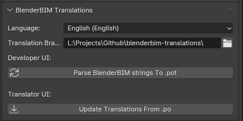

Translations¶
Bonsai supports translations to all languages that Blender supports. We’ll describe how you can help translate the add-on as a translator, or how you can ensure your strings are translatable as a developer. Translations are managed using a separate add-on built for this purpose.
Clone the bonsai-translations repository. This repository holds all the core translation strings in
.poformat.Download the bonsai-translations add-on and install it as a Blender add-on. This add-on lets you convert translation data to and from the
.pofiles for Bonsai.In the Render Properties tab, find the Bonsai Translations panel, and browse to where you have closed the
bonsai-translationsrepository, and click on Setup Translation UI.
You should now see a new interface with two buttons.
How to translate the add-on¶
Before beginning, look inside the bonsai-translations repository for a
.po file for the language you want to translate to (e.g. de_DE.po for
German). If this file does not yet exist, congratulations! You are the first
person to translate to this language! Create a folder in
bonsai-translations with your language code and copy the
bonsai.pot language template file to that folder and rename it
according to your language (e.g. for German you would copy bonsai.pot to
de_DE/de_DE.po).
Supported language codes are:
'ca_AD', 'en_US', 'es', 'fr_FR', 'ja_JP', 'sk_SK', 'cs_CZ', 'de_DE',
'it_IT', 'ka', 'ko_KR', 'pt_BR', 'pt_PT', 'ru_RU', 'uk_UA', 'vi_VN',
'zh_HANS', 'zh_HANT', 'ab', 'ar_EG', 'bg_BG', 'el_GR', 'eo', 'eu_EU',
'fa_IR', 'fi_FI', 'ha', 'he_IL', 'hi_IN', 'hr_HR', 'hu_HU', 'id_ID',
'ky_KG', 'ne_NP', 'nl_NL', 'pl_PL', 'sr_RS', 'sr_RS@latin', 'sv_SE', 'sw',
'ta', 'th_TH', 'tr_TR'.
As a translator, it is recommended to translate text in bulk by modifying the
.po files directly. We recommend installing software such as Poedit. These translation software offer features such as auto
translation, suggestions, and tracking. Alternatively, you may edit the .po
file as a text file.
Once you have edited the relevant language’s .po file, click on the
Update Translations From .po button in the Bonsai Translations
panel.
How to add new translation strings¶
When you have new strings to translate, press the Parse Bonsai strings to
.pot button. This detects strings in the source code using regex patterns and
writes out to the bonsai.pot language template file. You may then diff
this file and propagate changes manually to all translated .po files.
The .pot file is only used as a blank template for users to create or
compare .po files. The .po files are the source of truth for
translation strings. Blender does not read from the .pot or .po files.
Instead, Blender reads from bonsai/translations.py which contains a
dictionary of strings formatted specifically for Blender. The
translations.py file is generated from the .po files. This is generated
when we distribute installable packages, or when translators manually press the
Update Translations From .po button.
Warning
Do not commit the translations.py file as it is auto-generated.